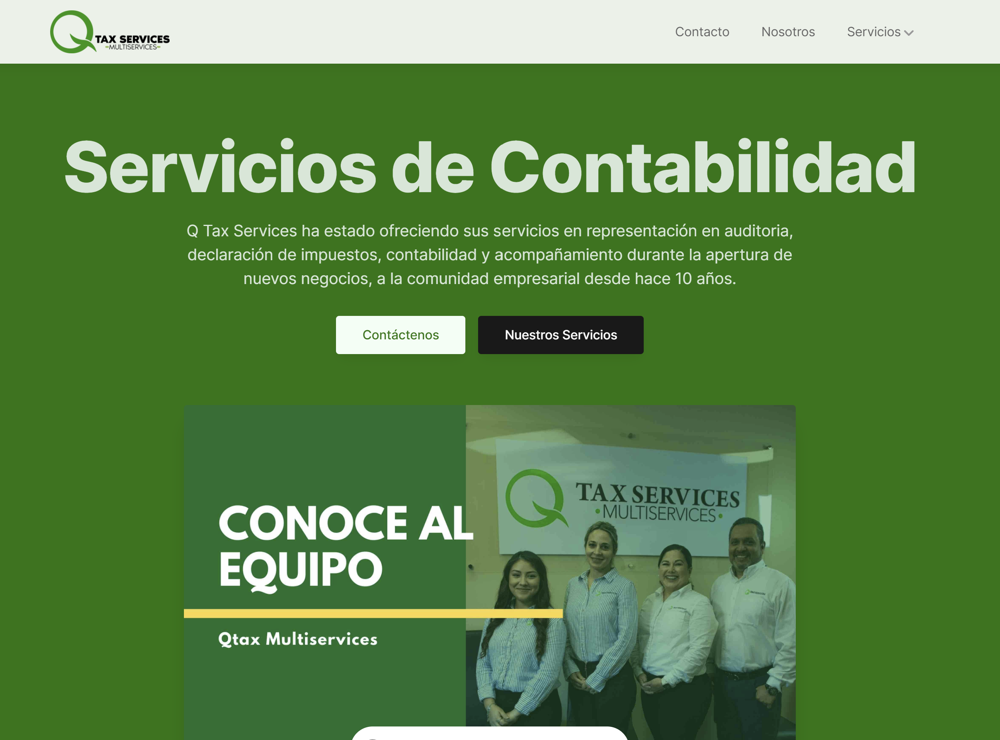

Qtax Multiservices
Qtax Multiservices is an accounting firm focused on spanish speaking people in the United States. They already had a website, but the design was outdated and they needed a fresh look.
I used Alpine.js, a lightweight, javascript framework similar to Vue, for this website. I experimented with it and thought it would be perfect to tackle this project. Netlify has always been my go-to hosting service and it worked great for this site. This might be my new setup for certain type of projects, but it is hard to beat Next.js.
I also helped in the marketing side, installing Google Analytics and MailChimp into the site. Additionally, I edited videos and posts for their social media.